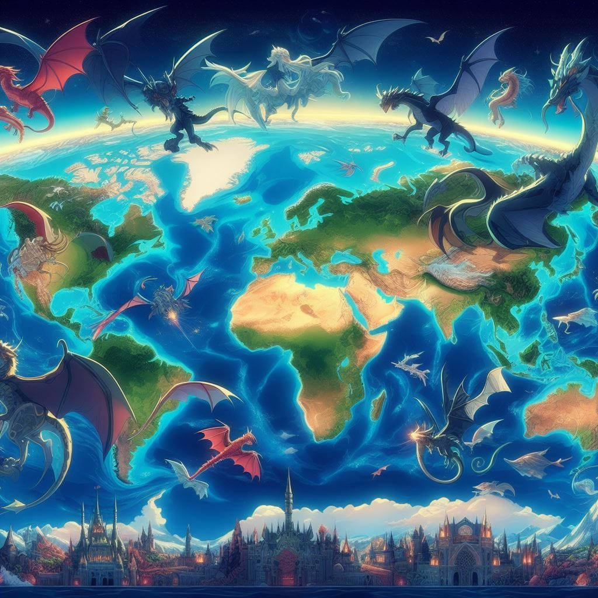

¿LOS HAN VISTO?
AVISTAMIENTOS
Alrededor del mundo se han oido relatos sobre supuestos avistamientos de dragones. Aca te vamos a mostrar donde han sido los mas conocidos
ESTADOS UNIDOS
En 1776 Marineros de Martha's Vineyard reportaron un encuentro con un dragón
Polonia
En 1934 en el pueblo de Brosno, los habitantes afirmaron ver una creatura gigantesca y alada con forma de dragón surcar los cielos
Laos
En 2011 pescadores en el rio Mekong en Laos, afirmaron ver una criatura serpentina de enormes proporciones
Inglaterra
Hay reportes del año 1405 del condado de Suffolk en Inglaterra
